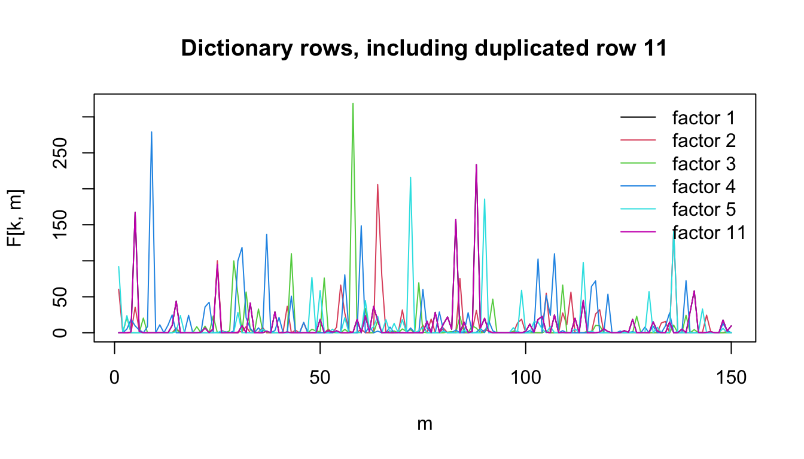
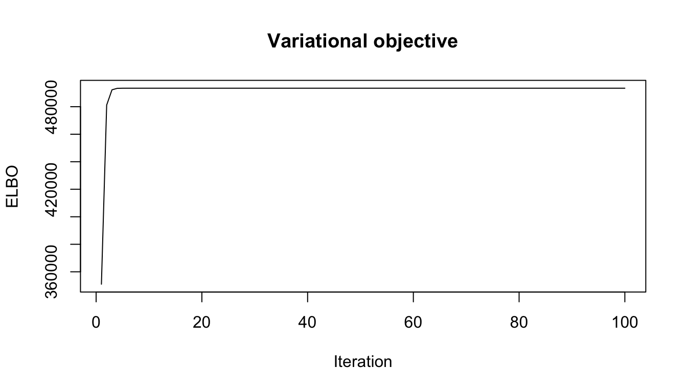
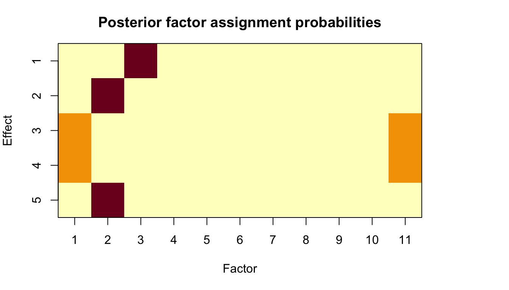
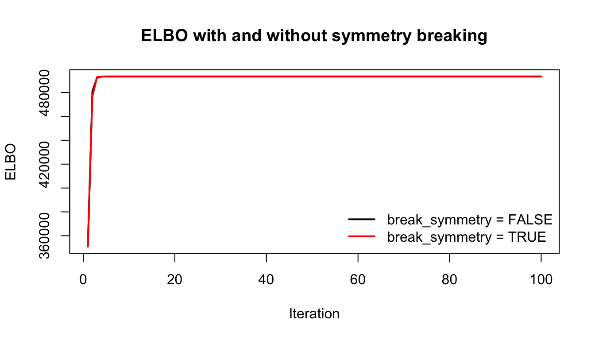
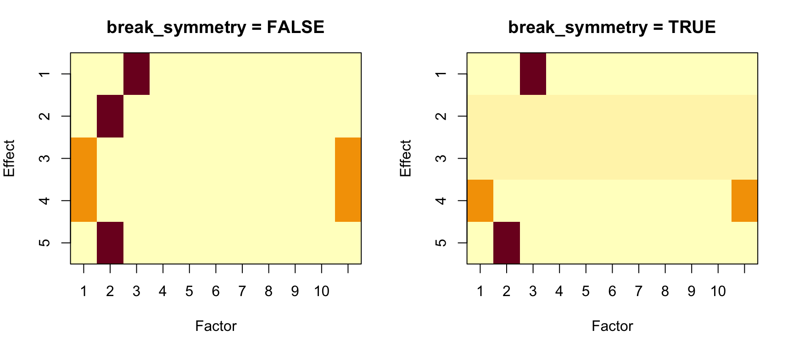

Last updated: 2026-07-27
Checks: 5 2
Knit directory: mos-nmf-experiments/
This reproducible R Markdown analysis was created with workflowr (version 1.7.1). The Checks tab describes the reproducibility checks that were applied when the results were created. The Past versions tab lists the development history.
The R Markdown is untracked by Git. To know which version of the R Markdown file created these results, you’ll want to first commit it to the Git repo. If you’re still working on the analysis, you can ignore this warning. When you’re finished, you can run wflow_publish to commit the R Markdown file and build the HTML.
The global environment had objects present when the code in the R Markdown file was run. These objects can affect the analysis in your R Markdown file in unknown ways. For reproduciblity it’s best to always run the code in an empty environment. Use wflow_publish or wflow_build to ensure that the code is always run in an empty environment.
The following objects were defined in the global environment when these results were created:
| Name | Class | Size |
|---|---|---|
| rstudio_pandoc | character | 232 bytes |
The command set.seed(20260624) was run prior to running the code in the R Markdown file. Setting a seed ensures that any results that rely on randomness, e.g. subsampling or permutations, are reproducible.
Great job! Recording the operating system, R version, and package versions is critical for reproducibility.
Nice! There were no cached chunks for this analysis, so you can be confident that you successfully produced the results during this run.
Great job! Using relative paths to the files within your workflowr project makes it easier to run your code on other machines.
Great! You are using Git for version control. Tracking code development and connecting the code version to the results is critical for reproducibility.
The results in this page were generated with repository version 5b76597. See the Past versions tab to see a history of the changes made to the R Markdown and HTML files.
Note that you need to be careful to ensure that all relevant files for the analysis have been committed to Git prior to generating the results (you can use wflow_publish or wflow_git_commit). workflowr only checks the R Markdown file, but you know if there are other scripts or data files that it depends on. Below is the status of the Git repository when the results were generated:
Ignored files:
Ignored: .DS_Store
Ignored: .Rhistory
Ignored: .Rproj.user/
Ignored: analysis/.DS_Store
Untracked files:
Untracked: analysis/1.poisson-susie.Rmd
Untracked: analysis/2.joint-learn-susie-poi-F.Rmd
Untracked: analysis/3.overspecify-D-mf-poi-susie.Rmd
Untracked: analysis/4.overspecify-K-mf-poi-susie.Rmd
Untracked: analysis/5.tree-scenario.Rmd
Untracked: tex/main.pdf
Untracked: tex/main.tex
Unstaged changes:
Modified: .codex/project-memory.md
Modified: analysis/_site.yml
Modified: analysis/index.Rmd
Deleted: analysis/joint-learn-susie-poi-F.Rmd
Modified: analysis/mos-nmf-overspecify-D.Rmd
Deleted: analysis/overspecify-D-mf-poi-susie.Rmd
Deleted: analysis/overspecify-K-mf-poi-susie.Rmd
Deleted: analysis/poisson-susie.Rmd
Deleted: analysis/tree-scenario.Rmd
Modified: code/mos-nmf-benchmark-utils.R
Modified: code/mos-nmf.R
Modified: paper-roadmap.md
Deleted: tex/model-ideas.tex
Note that any generated files, e.g. HTML, png, CSS, etc., are not included in this status report because it is ok for generated content to have uncommitted changes.
There are no past versions. Publish this analysis with wflow_publish() to start tracking its development.
This page is the starting point for the project. It demonstrates the single-observation Poisson SuSiE algorithm implemented in code/poisson-susie.R.
The experiment has two goals. First, it checks whether a sparse Poisson single-effect decomposition can recover the active factor rows. Second, it uses an exactly duplicated factor row to test whether the posterior over \(\gamma\) represents non-identifiability as uncertainty rather than forcing an arbitrary hard choice.
source("code/poisson-susie.R")For a count vector \(y = (y_1,\ldots,y_M)\) and a known nonnegative dictionary \(F \in \mathbb{R}_+^{K \times M}\), \[
y_m \sim \mathrm{Poisson}\left(\sum_{d=1}^D \beta_d F_{\gamma_d m}\right),
\qquad
\gamma_d \sim \mathrm{Categorical}(1/K,\ldots,1/K),
\qquad
\beta_d \mid \gamma_d \sim \mathrm{Gamma}(\alpha_d^0,\lambda_d^0).
\] The variational posterior assigns each effect \(d\) a categorical distribution over the rows of \(F\), stored as gamma_bar[d, k].
We simulate \(K = 11\) candidate factors and generate one count vector from three active factors. The 11-th row of \(F\) is an exact copy of the first row, so factors 1 and 11 are statistically indistinguishable. This gives a simple check that the posterior over \(\gamma\) quantifies assignment uncertainty.
set.seed(5)
M = 2000
D = 5
K = 11
F = matrix(rgamma(M * (K - 1), shape = 0.1, rate = 0.01),
nrow = K - 1, ncol = M)
F = rbind(F, F[1, ])
true_l = rep(0, K)
true_l[1:3] = c(1, 2, 3)
y_mean = as.numeric(true_l %*% F)
y = rpois(M, y_mean)
data.frame(
M = M,
K = K,
D = D,
total_count = sum(y),
nonzero_bins = sum(y > 0)
) M K D total_count nonzero_bins
1 2000 11 5 117595 1583plot_rows = c(1:5, 11)
matplot(t(F[plot_rows, 1:150]), type = "l", lty = 1,
xlab = "m", ylab = "F[k, m]",
main = "Dictionary rows, including duplicated row 11")
legend("topright", legend = paste("factor", plot_rows),
col = seq_along(plot_rows), lty = 1,
bty = "n")
alpha0 = rep(1, D)
lambda0 = rep(1, D)
fit = poi_susie(
y = y,
F = F,
alpha0 = alpha0,
lambda0 = lambda0,
max_iters = 100,
update_prior = TRUE,
init_seed = 3,
break_symmetry = FALSE
)plot(fit$elbo, type = "l", xlab = "Iteration", ylab = "ELBO",
main = "Variational objective")
Rows of gamma_bar correspond to the \(D\) single effects, and columns correspond to candidate factors. The true active factors are 1, 2, and 3, but factors 1 and 11 are identical dictionary rows.
round(fit$gamma_bar, 3) [,1] [,2] [,3] [,4] [,5] [,6] [,7] [,8] [,9] [,10] [,11]
[1,] 0.0 0 1 0 0 0 0 0 0 0 0.0
[2,] 0.0 1 0 0 0 0 0 0 0 0 0.0
[3,] 0.5 0 0 0 0 0 0 0 0 0 0.5
[4,] 0.5 0 0 0 0 0 0 0 0 0 0.5
[5,] 0.0 1 0 0 0 0 0 0 0 0 0.0Because rows 1 and 11 of \(F\) are identical, the likelihood cannot distinguish \(\gamma_d = 1\) from \(\gamma_d = 11\). The posterior mass assigned to these two labels therefore shows the uncertainty induced by non-identifiability.
data.frame(
effect = seq_len(D),
gamma_1 = round(fit$gamma_bar[, 1], 3),
gamma_11 = round(fit$gamma_bar[, 11], 3),
duplicate_mass = round(fit$gamma_bar[, 1] + fit$gamma_bar[, 11], 3)
) effect gamma_1 gamma_11 duplicate_mass
1 1 0.0 0.0 0
2 2 0.0 0.0 0
3 3 0.5 0.5 1
4 4 0.5 0.5 1
5 5 0.0 0.0 0top_factor = apply(fit$gamma_bar, 1, which.max)
posterior_mass = apply(fit$gamma_bar, 1, max)
estimated_beta = rowSums(fit$gamma_bar * fit$alpha / fit$lambda)
data.frame(
effect = seq_len(D),
top_factor = top_factor,
posterior_mass = round(posterior_mass, 3),
estimated_beta = round(estimated_beta, 3)
) effect top_factor posterior_mass estimated_beta
1 1 3 1.0 2.999
2 2 2 1.0 1.429
3 3 1 0.5 0.919
4 4 1 0.5 0.077
5 5 2 1.0 0.571op = par(mar = c(5, 4, 3, 6))
image(t(fit$gamma_bar[D:1, ]), axes = FALSE, xlab = "Factor", ylab = "Effect",
main = "Posterior factor assignment probabilities")
axis(1, at = seq(0, 1, length.out = K), labels = seq_len(K))
axis(2, at = seq(0, 1, length.out = D), labels = D:1)
box()
par(op)The algorithm recovers the active factors up to permutation of the \(D\) effects. Extra effects can remain diffuse or attach weakly depending on initialization and the learned prior scale.
The break_symmetry option checks whether two active effects have nearly the same posterior assignment vector. If they do, one effect is averaged with the other and the duplicate is reset to the uniform distribution. This is intended to discourage two effects from explaining the same factor.
fit_break = poi_susie(
y = y,
F = F,
alpha0 = alpha0,
lambda0 = lambda0,
max_iters = 100,
update_prior = TRUE,
init_seed = 3,
break_symmetry = TRUE
)plot(fit$elbo, type = "l", col = "black", lwd = 2,
xlab = "Iteration", ylab = "ELBO",
main = "ELBO with and without symmetry breaking")
lines(fit_break$elbo, col = "red", lwd = 2)
legend("bottomright", legend = c("break_symmetry = FALSE",
"break_symmetry = TRUE"),
col = c("black", "red"), lwd = 2, bty = "n")
round(fit_break$gamma_bar, 3) [,1] [,2] [,3] [,4] [,5] [,6] [,7] [,8] [,9] [,10] [,11]
[1,] 0.000 0.000 1.000 0.000 0.000 0.000 0.000 0.000 0.000 0.000 0.000
[2,] 0.091 0.091 0.091 0.091 0.091 0.091 0.091 0.091 0.091 0.091 0.091
[3,] 0.091 0.091 0.091 0.091 0.091 0.091 0.091 0.091 0.091 0.091 0.091
[4,] 0.500 0.000 0.000 0.000 0.000 0.000 0.000 0.000 0.000 0.000 0.500
[5,] 0.000 1.000 0.000 0.000 0.000 0.000 0.000 0.000 0.000 0.000 0.000top_factor_break = apply(fit_break$gamma_bar, 1, which.max)
posterior_mass_break = apply(fit_break$gamma_bar, 1, max)
estimated_beta_break = rowSums(fit_break$gamma_bar *
fit_break$alpha / fit_break$lambda)
data.frame(
effect = seq_len(D),
top_factor = top_factor_break,
posterior_mass = round(posterior_mass_break, 3),
estimated_beta = round(estimated_beta_break, 3)
) effect top_factor posterior_mass estimated_beta
1 1 3 1.000 2.999
2 2 3 0.091 0.000
3 3 3 0.091 0.000
4 4 1 0.500 0.996
5 5 2 1.000 2.000op = par(mfrow = c(1, 2), mar = c(5, 4, 3, 2))
image(t(fit$gamma_bar[D:1, ]), axes = FALSE, xlab = "Factor", ylab = "Effect",
main = "break_symmetry = FALSE")
axis(1, at = seq(0, 1, length.out = K), labels = seq_len(K))
axis(2, at = seq(0, 1, length.out = D), labels = D:1)
box()
image(t(fit_break$gamma_bar[D:1, ]), axes = FALSE,
xlab = "Factor", ylab = "Effect",
main = "break_symmetry = TRUE")
axis(1, at = seq(0, 1, length.out = K), labels = seq_len(K))
axis(2, at = seq(0, 1, length.out = D), labels = D:1)
box()
par(op)With this seed, symmetry breaking keeps effects from collapsing onto identical posterior assignment vectors. The active factors are still recovered up to permutation, but the extra effects are more likely to be reset toward diffuse assignments instead of duplicating an already-explained factor. This can make the interpretation cleaner when \(D\) is larger than the true number of active components, although the reset step can also introduce small ELBO jumps because it perturbs the current coordinate-ascent solution.
This first experiment establishes the basic role of gamma_bar: conditional on a dictionary \(F\), it is a posterior distribution over which factor explains each single effect. When two factor rows are identical, the posterior should split mass across those labels. When \(D\) is larger than needed, symmetry breaking can prevent repeated effects from explaining the same signal, but it should be treated as an algorithmic stabilization device rather than a fully principled model-selection step.
sessionInfo()R version 4.3.2 (2023-10-31)
Platform: aarch64-apple-darwin20 (64-bit)
Running under: macOS 26.5.1
Matrix products: default
BLAS: /System/Library/Frameworks/Accelerate.framework/Versions/A/Frameworks/vecLib.framework/Versions/A/libBLAS.dylib
LAPACK: /Library/Frameworks/R.framework/Versions/4.3-arm64/Resources/lib/libRlapack.dylib; LAPACK version 3.11.0
locale:
[1] C.UTF-8/C.UTF-8/C.UTF-8/C/C.UTF-8/C.UTF-8
time zone: America/New_York
tzcode source: internal
attached base packages:
[1] stats graphics grDevices utils datasets methods base
other attached packages:
[1] workflowr_1.7.1
loaded via a namespace (and not attached):
[1] vctrs_0.6.5 httr_1.4.7 cli_3.6.5 knitr_1.50
[5] rlang_1.1.6 xfun_0.52 stringi_1.8.7 otel_0.2.0
[9] processx_3.8.6 promises_1.5.0 jsonlite_2.0.0 glue_1.8.0
[13] rprojroot_2.1.1 git2r_0.36.2 htmltools_0.5.8.1 httpuv_1.6.16
[17] ps_1.9.1 sass_0.4.10 rmarkdown_2.29 jquerylib_0.1.4
[21] tibble_3.3.0 evaluate_1.0.5 fastmap_1.2.0 yaml_2.3.10
[25] lifecycle_1.0.4 whisker_0.4.1 stringr_1.6.0 compiler_4.3.2
[29] fs_1.6.6 pkgconfig_2.0.3 Rcpp_1.1.0 rstudioapi_0.17.1
[33] later_1.4.2 digest_0.6.39 R6_2.6.1 pillar_1.11.1
[37] callr_3.7.6 magrittr_2.0.3 bslib_0.9.0 tools_4.3.2
[41] cachem_1.1.0 getPass_0.2-4